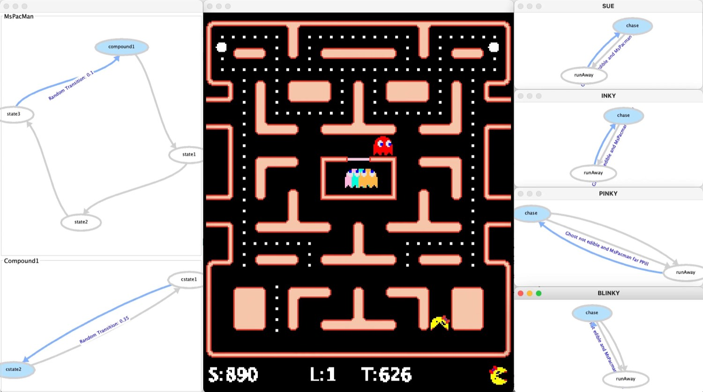
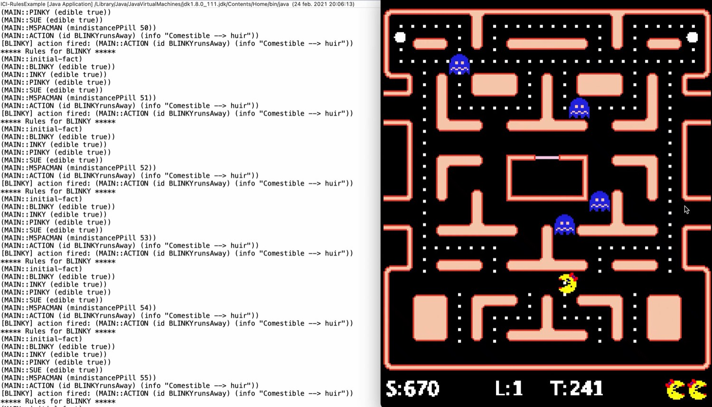
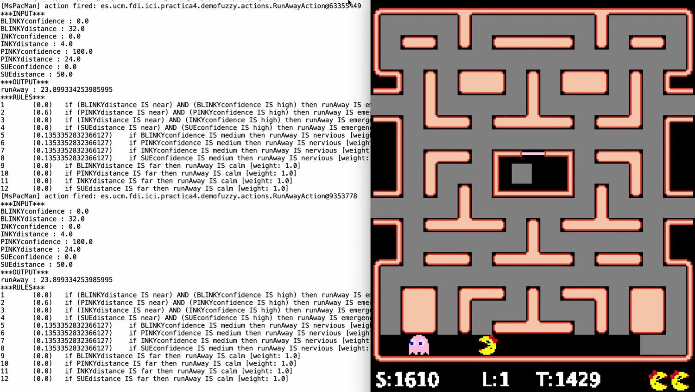

Introducción: ingeniería del conocimiento
Práctica 0 · Tutorial · 7 – 20 sep
El tema que sostiene todos los demás. Un sistema basado en conocimiento separa lo que el sistema sabe de lo que el sistema hace con lo que sabe: la base de conocimiento por un lado, el motor que razona sobre ella por otro. Toda la asignatura consiste en decidir qué va en la base de conocimiento y en qué formato.
- Sistema basado en conocimiento
- Programa donde el conocimiento del dominio está representado explícitamente y separado del mecanismo que lo utiliza.
- Base de conocimiento
- El conjunto de hechos y relaciones que el sistema sabe sobre el dominio, en un formato que puede inspeccionarse y corregirse a mano.
- Motor de inferencia
- El mecanismo que aplica el conocimiento a una situación concreta para obtener conclusiones o decisiones.
- Adquisición del conocimiento
- Sacar el conocimiento de donde esté, sea un experto, tus propias partidas o los datos del motor, y hacerlo explícito. Es el cuello de botella real.
- Modelos lógicos
- Representaciones basadas en verdad y deducción: lógica de predicados, reglas de producción.
- Modelos estructurados
- Representaciones basadas en organización: marcos, redes semánticas, ontologías, máquinas de estados.
- Modelos imprecisos
- Representaciones que admiten grados en vez de sí o no: lógica borrosa, probabilidad, similitud entre casos.
- Reusabilidad
- Grado en que el conocimiento modelado sigue valiendo al cambiar de problema o de dominio. Es la razón de cambiar de entorno a mitad de curso.
Repaso de IA para videojuegos
Prácticas 1 y 2 · 21 sep – 18 oct
El repertorio clásico de un personaje: cómo se mueve y cómo decide. Primero la solución directa a base de condicionales anidados, para ver dónde se rompe; después la máquina de estados, que es la primera representación de verdad del curso.

- Búsqueda de caminos
- Encontrar la ruta entre dos puntos del mapa. En el laberinto de Ms. Pac-Man el grafo es fijo y el motor ya ofrece distancias y caminos precalculados.
- Distancia de camino vs. euclídea
- La distancia en línea recta miente en un laberinto: dos nodos vecinos en el plano pueden estar a media pantalla por el pasillo.
- Comportamiento de dirección
- Regla local de movimiento (perseguir, huir, interceptar, patrullar) que se calcula cada tick a partir del estado.
- Toma de decisiones
- Elegir qué hacer, en un nivel por encima de cómo moverse: la decisión escoge el comportamiento, el comportamiento escoge la dirección.
- Máquina de estados finita (FSM)
- Conjunto de estados, uno activo cada vez, y transiciones etiquetadas con la condición que las dispara. Cada estado encapsula un comportamiento.
- Transición
- Condición sobre el estado del juego que hace pasar de un estado a otro: «fantasma cerca y no comestible», «se acabó el tiempo de píldora».
- FSM jerárquica
- Estados que contienen máquinas de estados. Evita la explosión de transiciones cuando el número de estados crece.
- Histéresis
- Margen deliberado entre la condición que entra a un estado y la que sale de él, para que el personaje no oscile entre dos estados en ticks consecutivos.
- Coordinación
- Los cuatro fantasmas son cuatro agentes con un objetivo común: repartirse cuadrantes, cortar escapatorias, no perseguir todos lo mismo.
Sistemas de reglas
Práctica 3 · 19 oct – 1 nov
Conocimiento declarativo: en vez de escribir el orden en que se comprueban las cosas, escribes las reglas y el motor decide cuáles se aplican. Se gana legibilidad y se pierde el control del flujo, que es exactamente el intercambio que hay que entender.

- Hecho
- Afirmación sobre el estado actual del mundo, añadida a la memoria de trabajo:
(fantasma-cerca blinky 12). - Regla de producción
- Par antecedente–consecuente: si se cumplen estos patrones sobre los hechos, ejecuta estas acciones.
- Memoria de trabajo
- El conjunto de hechos vigentes en un instante. Tu controlador la reconstruye o la actualiza en cada tick.
- Emparejamiento
- Proceso de encontrar qué reglas tienen su antecedente satisfecho por los hechos actuales.
- Agenda y resolución de conflictos
- Cuando varias reglas pueden dispararse a la vez, la estrategia de resolución decide el orden: prioridad explícita, especificidad, antigüedad del hecho.
- Encadenamiento hacia delante
- Se parte de los hechos y se deducen conclusiones. Es el modo natural para decidir la acción de un personaje.
- Encadenamiento hacia atrás
- Se parte de una hipótesis y se busca si los hechos la sostienen. Útil para diagnóstico más que para actuar.
- Jess
- Motor de reglas para Java que usaremos en la práctica. Las reglas se escriben en un fichero aparte del código Java, y eso es parte de la gracia.
Razonamiento borroso
Práctica 4 · 2 – 15 nov
«El fantasma está cerca» no es verdadero ni falso: es verdadero en cierto grado. La lógica borrosa permite escribir reglas con el vocabulario con el que de verdad piensa un jugador y obtener decisiones suaves en vez de saltos bruscos en un umbral.

- Conjunto borroso
- Conjunto en el que la pertenencia es un grado entre 0 y 1 en vez de un sí o un no.
- Función de pertenencia
- La curva que asigna ese grado a cada valor de la variable: triangular, trapezoidal, gaussiana.
- Variable lingüística
- Variable cuyos valores son palabras, como una distancia que puede ser cerca, media o lejos, cada una con su función de pertenencia.
- Regla borrosa
- Regla escrita sobre variables lingüísticas: «si la distancia es cerca y el fantasma es no comestible, la amenaza es alta».
- Difuminación
- Convertir las magnitudes numéricas del juego en grados de pertenencia. La entrada del sistema borroso.
- Inferencia (Mamdani)
- Combinar el grado de cumplimiento de cada regla para obtener un conjunto borroso de salida.
- Desdifuminación
- Reducir ese conjunto de salida a un número con el que actuar: centro de gravedad, media de máximos.
- jFuzzyLogic
- Biblioteca Java que usaremos; las reglas se escriben en FCL, un formato de texto independiente del código.
Decisiones en juegos por turnos
Práctica 5 · 16 – 29 nov
Cuando el juego va por turnos y hay un adversario, se puede simular el futuro en vez de razonar sólo sobre el presente. El conocimiento del dominio no desaparece: se traslada a la función que evalúa lo buena que es una posición y a cómo se poda el árbol.
- Modelo forward
- Capacidad de preguntarle al juego «si hago esta jugada, ¿cómo queda el estado?» sin jugarla de verdad. Sin él no hay búsqueda.
- Árbol de juego
- Nodos que son estados y aristas que son jugadas, alternando el turno de cada jugador.
- Minimax
- Elegir la jugada que maximiza tu resultado suponiendo que el adversario elige siempre la que te lo minimiza.
- Poda alfa-beta
- Descartar ramas que no pueden cambiar la decisión final. Mismo resultado que minimax explorando mucho menos.
- Función de evaluación
- Estimación de lo buena que es una posición sin llegar al final de la partida. Aquí es donde va el conocimiento del dominio.
- Monte Carlo Tree Search
- Construir el árbol de forma incremental guiado por simulaciones aleatorias: seleccionar, expandir, simular, propagar el resultado.
- UCT
- La fórmula que equilibra explotar la jugada que va bien y explorar las poco visitadas durante la selección.
- Presupuesto y anytime
- El controlador tiene un tiempo límite por jugada; MCTS puede pararse en cualquier momento y devolver la mejor jugada encontrada hasta entonces.
El entorno de esta práctica sale de una encuesta a la clase, así que se anuncia cuando la encuesta esté cerrada, y las páginas del tema se publican con ese anuncio. El contenido, en cambio, ya está decidido: es lo que hay en la lista de arriba.
Razonamiento basado en casos
Práctica 6 · 30 nov – 13 dic
La última vuelta de tuerca: en vez de escribir reglas, guardar experiencias. Un sistema basado en casos resuelve un problema nuevo recuperando el caso más parecido que ya resolvió y adaptando su solución. Es la forma más directa de que un comportamiento aprenda sin entrenar un modelo.
- Caso
- Par problema–solución tomado de una experiencia concreta, con el resultado que obtuvo.
- Base de casos
- La memoria del sistema. Sustituye a la base de reglas: el conocimiento está en los ejemplos, no en las generalizaciones.
- Ciclo de las cuatro R
- Recuperar el caso similar, reutilizar su solución, revisar el resultado y retener el caso nuevo.
- Medida de similitud
- Función que decide qué caso guardado se parece más a la situación actual. Ahí va el conocimiento del dominio.
- Adaptación
- Ajustar la solución recuperada a las diferencias entre el caso viejo y el problema nuevo.
- Retención y mantenimiento
- Decidir qué casos merecen guardarse para que la base crezca en calidad y no sólo en tamaño.
Agentes para juegos de lenguaje
Código Secreto · 14 – 20 dic
El bloque que rompe la regla del curso. Cuando el tablero son palabras, escribir el conocimiento a mano no llega: hay que medir significado, y eso hoy sale de modelos entrenados sobre muchísimo texto. Sirve para ver por dentro las técnicas del otro lado de la Inteligencia Artificial y para entender qué se gana y qué se pierde al cambiar de lado.
- Código Secreto
- Veinticinco palabras en la mesa. El jefe de espías ve cuáles son de su equipo y sólo puede decir una palabra y un número para señalarlas.
- Embedding
- Vector que representa una palabra, colocado de forma que las palabras de significado parecido queden cerca unas de otras.
- Similitud del coseno
- La medida habitual de cercanía entre dos vectores: el ángulo que forman, no la distancia en línea recta.
- Modelo de lenguaje
- Modelo que, dado un contexto, reparte probabilidad entre las continuaciones posibles. No deduce la respuesta, la ordena.
- Prompt
- El contexto que se le da al modelo. Aquí es una decisión de diseño más, y se prueba y se mide como cualquier otra.
- Decisión con riesgo
- Acertar de más regala el turno y tocar la casilla negra pierde la partida, así que la mejor pista no siempre es la más ambiciosa.
- Sesgo del corpus
- Los vectores heredan lo que había en el texto de entrenamiento, con sus asociaciones útiles y sus prejuicios.
Después de cuatro meses escribiendo conocimiento a mano, este bloque enseña el contraste: lo que se gana en cobertura, lo que se pierde en control y por qué la industria usa cada cosa donde la usa.
Para leer más
La bibliografía completa, tema por tema, está en la página de la asignatura. Si sólo vas a leer un libro en todo el curso, que sea el de Millington y Funge: es el que más se parece a lo que hacemos aquí.